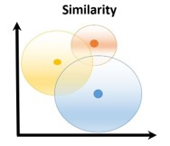
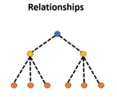

레거시 모더나이저
(Stored procedure to Java)
지난 "비즈니스 로직을 SQL에 관리하는 시스템과 도메인 클래스에서 관리하는 시스템의 차이점 Part1" 과
"비즈니스 로직을 SQL에 관리하는 시스템과 도메인 클래스에서 관리하는 시스템의 차이점 Part2" 에서 급여계산 예제를 통해 Stored Procedure를 사용하는 Transaction Script 접근과 Java에서 도메인 클래스를 사용하는 접근 방식에 대해 비교해 보았는데요,
오늘은 Part3에 관한 내용으로 '스토어드 프로시저에서 자바 클린 아키텍처로 전환하면 얻을 수 있는 장점' 을 먼저 알아보겠습니다.
스토어드 프로시저에서 자바 클린 아키텍처로 전환할 때의 이점
- 유지보수성 향상: 스토어드 프로시저는 데이터베이스 시스템에 종속적이어서, 변경이 필요할 때마다 데이터베이스 전문가의 개입이 필요합니다. 이는 유지보수 과정에서 특정 전문 지식을 요구하며, 접근성이 제한됩니다. 반면, 자바와 같은 범용 프로그래밍 언어로 로직을 이전하면, 더 넓은 범위의 개발자가 시스템을 이해하고 수정할 수 있어 유지보수성이 크게 향상됩니다. 이는 자바가 제공하는 풍부한 문서와 커뮤니티 지원 덕분에 가능하며, 시스템의 유연성과 접근성을 높여줍니다.
- 테스트와 디버깅 용이성: 스토어드 프로시저는 데이터베이스 내부에서 실행되기 때문에 테스트와 디버깅이 복잡하고 어려운 반면, 자바로 로직을 이전하면 모던 개발 환경에서 제공하는 다양한 테스트 및 디버깅 도구를 활용할 수 있습니다. 자바 환경은 단위 테스트, 통합 테스트 등을 쉽게 구현할 수 있으며, 디버깅 시 시각적 도구와 로깅 기능을 통해 문제를 빠르고 정확하게 식별할 수 있습니다.
- 확장성 및 유연성: 자바와 같은 범용 프로그래밍 언어로 작성된 코드는 플랫폼 독립적이며, 다양한 운영 체제와 환경에서 실행될 수 있습니다. 이는 클라우드 기반 아키텍처와 같은 현대적인 인프라에 쉽게 통합되어 시스템의 확장성과 유연성을 크게 향상시킵니다. 반면, 스토어드 프로시저는 특정 데이터베이스 시스템에 종속되어 있어, 다른 환경으로의 이전이나 확장이 어렵습니다. 이로 인해 클라우드와 같은 새로운 기술 환경에 적응하는 데 제한이 있으며, 시스템의 확장성과 유연성이 자바에 비해 상대적으로 낮습니다.
- 개발 효율성 증가: 자바는 강력한 라이브러리와 프레임워크를 지원하며, 전 세계적으로 활발한 개발자 커뮤니티가 있어 다양한 개발 리소스와 지원을 받을 수 있습니다. 이는 개발 속도와 효율성을 크게 향상시키는 요소입니다. 반면, 스토어드 프로시저는 특정 데이터베이스 시스템에 종속되어 있으며, 사용할 수 있는 라이브러리나 도구가 제한적이고, 개발자 커뮤니티도 자바만큼 크지 않습니다. 이로 인해 개발과 유지보수 과정에서 자바에 비해 상대적으로 더 적은 지원을 받게 되며, 개발의 유연성과 속도가 제한될 수 있습니다.
- 시스템의 안정성 및 보안 강화: 자바는 가비지 컬렉션을 통한 자동 메모리 관리와 구조화된 예외 처리 메커니즘을 제공하여 메모리 누수와 예외 상황을 효과적으로 관리합니다. 반면, 스토어드 프로시저는 데이터베이스 엔진에 의존한 메모리 관리와 더 제한적인 예외 처리 기능을 가지고 있어, 자바만큼 세밀한 제어가 어렵습니다. 또한, 자바는 다양한 보안 프레임워크와 라이브러리를 통해 강력한 보안 기능을 제공하는 반면, 스토어드 프로시저는 이러한 보안 기능을 내장하고 있지 않아 보안 측면에서 유연성과 확장성이 제한됩니다.
자바로 전환 시 AI 기반 자동화 전환과 사람이 직접 전환할 때의 차이
| 사람에 의한 직접 전환 | AI 기반 자동화 전환 | ||
|---|---|---|---|
| 개발 과정 | 복잡하고 전문가의 개입 필요 | AI가 자동으로 복잡성 해결 | |
| 인건비 | 전문가 집중으로 비용 상승 | 자동화로 인건비 절감 | |
| 유지보수 | 코드 이해 및 수정 어려움 | ➜ | 클린 아키텍처로 유지보수 용이 |
| 오류 가능성 | 수동 개입으로 오류 발생 가능 | AI 정확도로 오류 최소화 | |
| 협업 효율 | 제한적 커뮤니케이션 | 유비쿼터스 언어로 커뮤니케이션 강화 |
이와 같이, 자바로 전환 시 AI 기반 자동화 전환과 사람이 직접 전환했을 때의 차이는 여러 측면에서 나타납니다. AI 기반 자동화 전환은 시간과 비용을 절감하고, 오류를 최소화하여, 효율을 높일 수 있는 반면, 사람이 직접 전환할 때는 깊은 이해와 경험이 필요하며, 추가적인 최적화 작업과 테스트가 요구됩니다.
레거시 모더나이저
Legacy Code 2 Clean Code 동작 세부 구조
AI 기반 레거시 모더나이저 도구는 기존의 복잡한 스토어드 프로시저를 현대적이고 클린한 자바 아키텍처로 변환하도록 설계되었습니다. 이 도구는 단순한 표면적 변환을 넘어, 구조적이고 문법적인 변화를 포함하여 공유 데이터베이스 절차 방식에서 견고한 객체 지향 모델로의 전환을 지원합니다.
핵심 변환 과정에서는 비즈니스 로직이 포함된 난해한 SQL 코드를 도메인 전문가와 개발자가 쉽게 협업하고 유지할 수 있도록 유비쿼터스 언어를 사용하여 보다 접근하기 쉬운 형태로 전환합니다. 이를 통해 코드의 이해도와 유지보수성을 크게 향상시킵니다.
-
그래프 시각화: 레거시 코드(스토어드 프로시저)의 복잡한 구조를 관계형 그래프로 시각화하여 이해하고 리팩토링하기 쉽게 만듭니다. 스토어드 프로시저의 흐름을 그래프로 시각화함으로써, 각 프로시저 간의 상호작용과 데이터 흐름을 명확하게 파악할 수 있습니다. 이를 통해 개발자와 도메인 전문가가 코드의 구조와 의도를 쉽게 이해하고, 필요한 부분을 효율적으로 리팩토링할 수 있습니다. 그래프 시각화는 복잡한 의존성을 시각적으로 표현하여, 코드의 문제점을 빠르게 식별하고 개선할 수 있는 강력한 도구를 제공합니다.
《 벡터 DB와 그래프 DB를 이용한 RAG 기법의 차이 》
측면 벡터 데이터베이스 그래프 데이터베이스 (KG) 자료 구조   데이터 유형 텍스트, 이미지, 오디오와 같은 대량의 비구조화된 데이터 관리에 이상적입니다. 복잡한 관계를 가진 엔터티 간의 구조화된 데이터에 적합합니다. 도메인 적합성 ML 모델과 데이터 유형의 다양성이 필요한 애플리케이션에서 자주 사용됩니다. 특정 도메인에 대한 깊이 있는, 전문화된 지식이 요구되는 애플리케이션에 매우 효과적입니다. 설명 가능성 KG보다는 투명성이 떨어지며, 명확한 경로보다는 유사성 점수에 초점을 맞춥니다. 명확한 추론 경로를 제공하여 설명 가능성이 높습니다. 데이터 무결성 데이터 모델링의 유연성이 때때로 엄격한 데이터 일관성을 저해할 수 있습니다. 데이터 무결성과 일관성을 유지하며, 신뢰할 수 있는 데이터 표현에 필수적입니다. 하이브리드 사용 사례 KG와 결합되어 구조화된 데이터와 비구조화된 데이터를 모두 효과적으로 처리할 수 있습니다. 구조화된 지식과 ML 기능을 활용하기 위해 벡터 데이터베이스와 결합할 수 있습니다. Source: RAG: Vector Databases vs Knowledge Graphs? | by Ahmed Behairy | Medium
- 자바로 전환: LLM AI 기술을 활용하여 레거시 코드를 자바로 자동 전환합니다. 이를 통해 수동 코드 재작성의 필요성을 줄이고, 인간의 오류 가능성을 최소화합니다. AI는 복잡한 비즈니스 로직을 정확하게 해석하고 변환하여, 개발자와 도메인 전문가가 쉽게 이해하고 유지할 수 있는 현대적이고 클린한 자바 아키텍처로 전환합니다. 이 자동화된 번역 프로세스는 시간과 비용을 절감하며, 코드의 일관성과 품질을 보장합니다.
- 결과 검증: 테스팅 AI를 통해 자동으로 테스트 케이스를 생성하고 실행함으로써 기존 레거시 코드와의 비교를 가능하게 합니다. 이를 통해 자동화된 테스트를 통해 기존 데이터에 기반하여 애플리케이션의 변환이 정확하게 이루어졌는지를 실시간으로 확인할 수 있습니다. 이 기능은 기존 시스템의 기능적 완전성을 유지하면서도 새로운 아키텍처로의 전환이 원활하게 진행될 수 있도록 보장합니다.
레거시 모더나이저 사용 방법
Stored procedure to Java - MSA Easy 레거시 모더나이저 데모 영상
1. 먼저 스토어드 프로시저 파일을 legacy-modernizer에 업로드를 합니다.
2. 그럼 현재 올린 스토어드 프로시저 파일 내용이 보여지면서, 해당 파일을 분석하게 됩니다.
하지만 스토어드 프로시저 파일의 내용 전체를 LLM (Large Language Model)에게 전달하게 되면, 최대 토큰 수를 넘어가기 때문에, LLM (Large Language Model)에 데이터를 전달할 때, 토큰 제한과 문맥 유지를 고려하여 의미적으로 연결된 덩어리로 쪼개서 전달하는 것이 중요합니다. 예를 들어 코드 내에서 각 블록(예: IF 문, SELECT 문, DECLARE)은 중간에서 잘라 전달하지 않고, 의미적으로 완전한 단위로 나누어 전달하는 것이 중요합니다. 이렇게 함으로써 문맥을 유지하고, 모델이 데이터를 정확하게 이해하고 처리할 수 있도록 도와줍니다. 이를 위해 ANTLR (ANother Tool for Language Recognition) 같은 파싱 도구를 사용하여 코드의 구조를 파악하고, 이를 트리 구조로 변환하는 과정이 필요합니다.
3. 그런 다음, 사용자가 올린 스토어드 프로시저를 먼저 그래프 형태로 시각화를 진행합니다.
사용자가 제공한 스토어드 프로시저를 그래프 형태로 시각화하는 과정은 다음과 같습니다. 먼저, Antlr에서 얻은 구문 트리(Syntactic Tree)와 스토어드 프로시저를 기반으로 노드와 관계를 정의하는 사이퍼 쿼리(Cypher Query)를 생성합니다. 이 사이퍼 쿼리를 실행하여 그래프 데이터베이스에 저장하고, 결과적으로 이 데이터를 그래프 형태로 시각화합니다. 이 과정을 통해 사용자는 스토어드 프로시저의 구조와 로직을 직관적으로 이해할 수 있습니다.
4. 그래프 시각화에서 각 노드를 클릭하면, 해당 노드에 관련된 정보를 확인할 수 있습니다.
예를 들어, 테이블 노드의 경우, 테이블의 속성 정보를 볼 수 있습니다. 다른 종류의 노드들에 대해서는 그 노드가 코드 내에서 수행한 기능을 요약한 설명과 해당 코드 부분의 소스코드를 볼 수 있습니다. 이 기능은 사용자가 그래프를 통해 코드의 구조와 각 요소의 상세한 역할을 더 깊이 이해할 수 있도록 돕습니다.
5. 가장 핵심인 자바 아키텍처로 변환입니다.
그래프에서 테이블 노드를 클릭하면, 해당 테이블과 관련된 2단계 깊이의 관계들을 자바 아키텍처로 변환하는 기능을 제공합니다. 이 변환 과정에서는 테이블 간의 참조 관계뿐만 아니라, 각 테이블의 속성과 연관된 메서드들을 자바 클래스와 인터페이스로 표현합니다. 이를 통해 데이터베이스 스키마를 기반으로 한 객체 지향적인 자바 코드 구조를 생성할 수 있으며, 이는 애플리케이션 개발에 있어서 중요한 아키텍처 설계 지침을 제공합니다.
만약 결과물이 마음에 들지 않을 경우, 사용자는 채팅을 통해 원하는 결과에 맞게 수정 요청을 할 수 있습니다. 예를 들어, 사용자가 "Employee에 대해 Repository 인터페이스도 추가해주세요"라는 요청을 하면, 이에 맞게 Employee에 대한 Repository 인터페이스를 추가하여 결과를 제공합니다. 위의 예시는 사용자의 요청에 따라 EmployeeRepository 인터페이스가 추가된 것을 보여줍니다.